bio.viz gsm.bio release review 2026-10-03
bio.viz is a new chart library for biomarker data and gsm.bio is the R package behind it: four charts that compare groups and relate variables, where every test, coefficient and fitted line is computed by R, either started inside your browser or run at a desk and stored in the page. Below, each chart is shown on its live demo with the numbers you should see when you try it, followed by the R side.
4 charts, built on safety.viz v1.9.0’s shared parts 7 statistics functions and 4 widgets in R made-up study: 200 participants, 12 biomarkers, 5 visits R in the browser: 13.26 MB, once bio.viz dev at 8054114, gsm.bio dev at f4b1392
What to look at
Each demo runs on gsm.bio’s made-up biomarker study, where three effects were planted and every other biomarker is null. A chart draws and lists participants; it never computes a test. The first time a demo needs a statistic, it starts R in your browser, which takes a few seconds and happens once per visit.
Does this biomarker differ between these groups? It opens on every biomarker at every visit and prints no test there, so a page never shows dozens of unadjusted p-values at once, and R is not started until you open one biomarker.
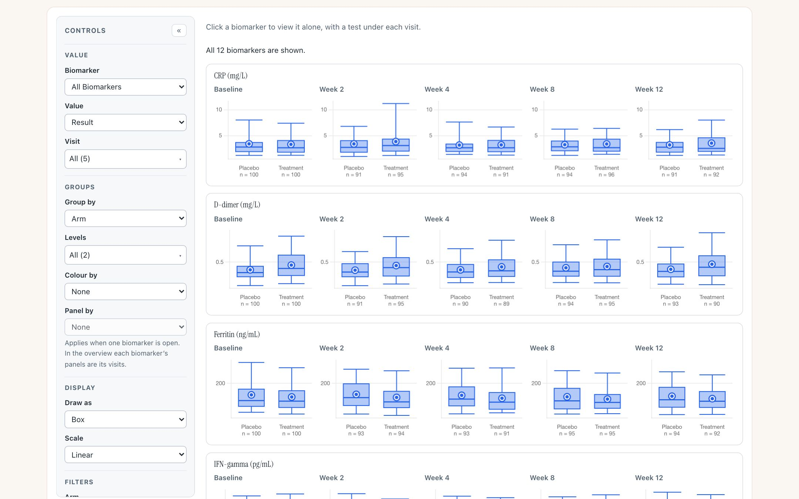
The overview: a row per biomarker, a panel per visit, the count in each group beneath. The page reads “All 12 biomarkers are shown.” No R had been downloaded at this point.
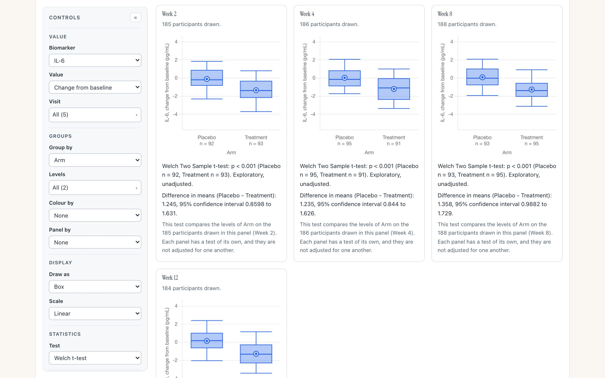
IL-6, change from baseline, by arm. Under each visit is R’s Welch test of the participants drawn in that panel, with its method and counts, labelled exploratory and unadjusted. The Baseline panel is not drawn, because every participant’s change there is nought.
What you should see
Try it
Open the group comparisonDo these two variables move together? It opens on the pair the study planted a correlation of 0.6 in: TNF-alpha against IL-10 at Baseline, coloured by arm, with R’s straight-line fit.
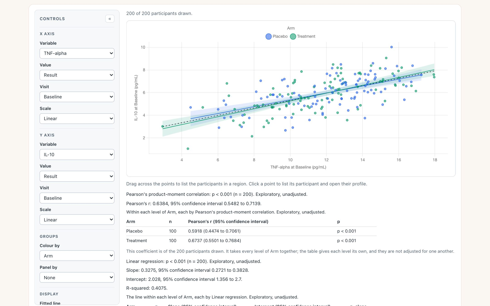
Every point of each fitted line, and its band, is R’s. With no R attached, the points and the y = x line still draw and the chart says the rest is unavailable.
What you should see
Try it
Open the association scatterWhich of these biomarkers are related? Below the diagonal each pair is a mark, wider and darker the stronger R’s coefficient; above it is the number. It prints no p-values, by design.
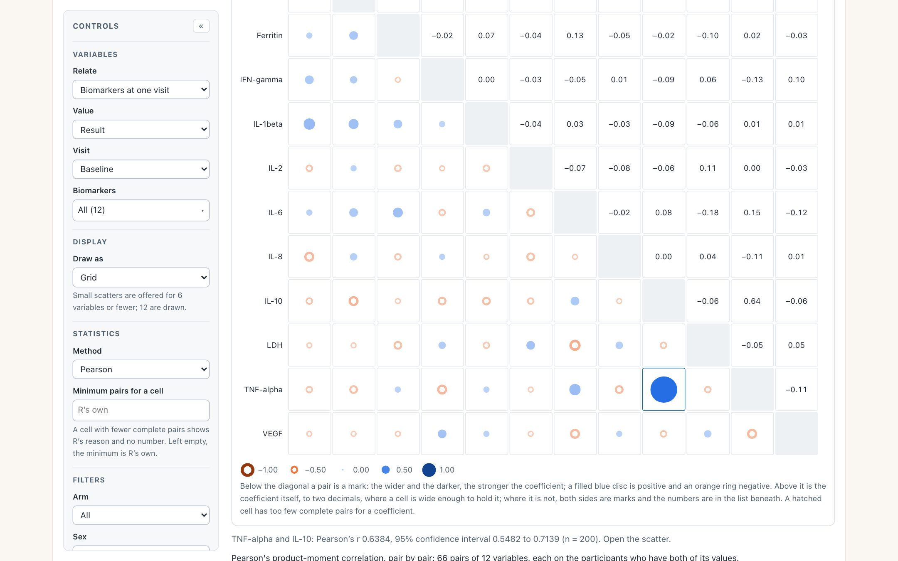
Twelve biomarkers at Baseline: 66 pairs, each with its own pair count. The planted pair is the one large mark. Pointing at it prints its coefficient, interval and count under the grid.
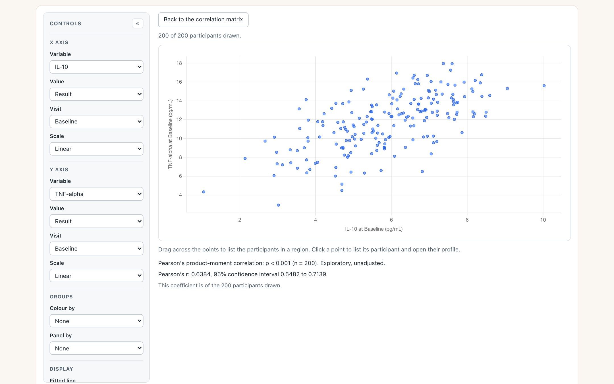
Clicking the cell opens that pair in the association scatter, in place, with the same R, method and filters. Back returns to the grid as it was without asking R again.
What you should see
Try it
Open the correlation matrixWhich biomarkers differ between the arms? One comparison, run by R across every biomarker, one row each: the standardised difference with its interval, and the p-value unadjusted and adjusted across the rows.
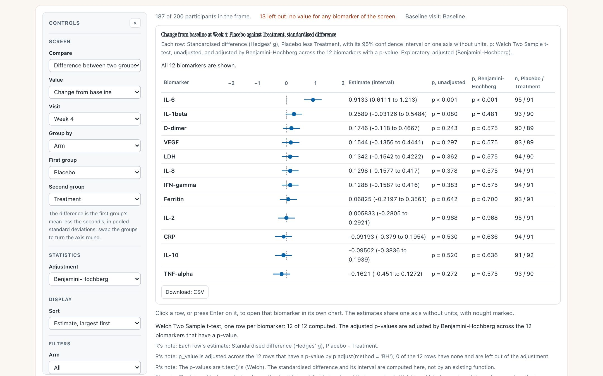
Change from baseline at Week 4, Placebo against Treatment, sorted by R’s estimate. IL-6 is the top row; every other interval crosses nought. 187 of the 200 participants have a value for at least one biomarker, and each row has its own counts.
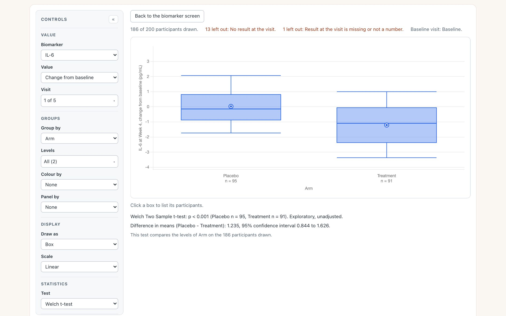
Clicking the IL-6 row opens IL-6 in the group comparison, at the same visit and value, with the same two groups and Welch’s test. Its p-value is the one the screen’s row was built from.
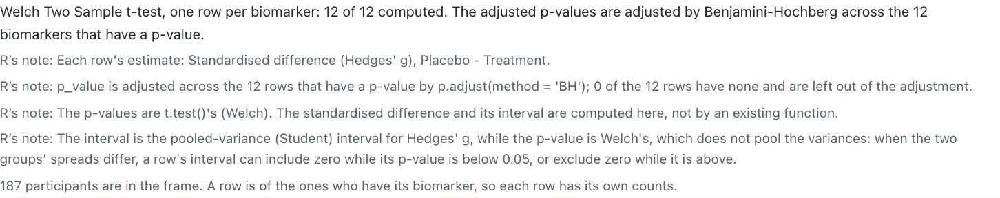
The line under the screen’s rows. Every note is R’s own, passed through as R wrote it. The fourth is new in this release candidate: the interval and the p-value come from different assumptions about the two groups’ spread, and R says so.
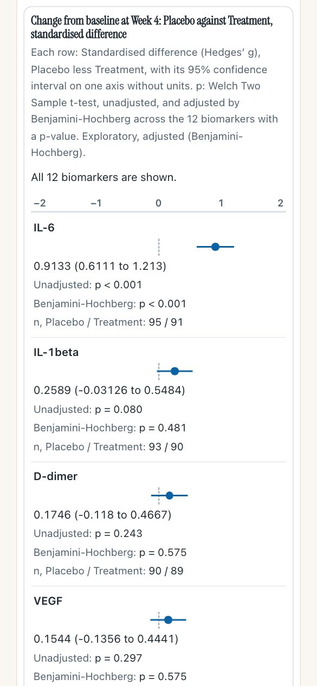
The screen at 390 px: each row stacks, and nothing scrolls sideways.
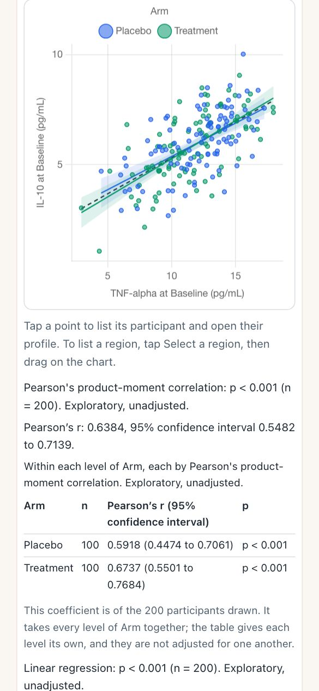
The scatter at 390 px, with the phone’s own hint: tap Select a region before dragging.
What you should see
Try it
Open the biomarker screenA chart asks R for a statistic through one call, which always answers: with what R returned, with a statement that statistics are unavailable and why, or with R’s own error. Behind it, answers worked out ahead of time can ship with the page; otherwise R itself, built for the browser (webR 0.6.0), is fetched from its public host the first time an answer is needed. The R check page runs two tests on two small public tables and puts each browser answer beside desktop R’s, in full.
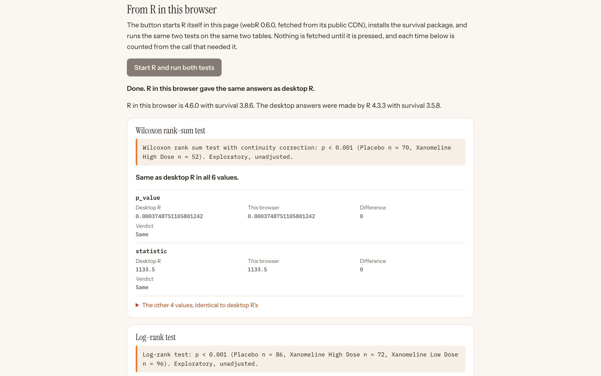
After pressing the button. R in the browser is a different version, built by a different compiler, from the desktop R that wrote the expected answers, and the two agree. The tables are cut from the public CDISC pilot study data.
| What starting R cost | Megabytes | Seconds |
|---|---|---|
| First visit, nothing cached: recorded on the page | 26.22 | 3.568 |
| Reload, R’s files cached: recorded on the page | 0.00 | 2.143 |
| Second call, R already running: recorded on the page | 0.00 | 0.004 |
| First visit, this capture | 26.22 | 3.7 |
| Group comparison demo, first test, this capture | 13.26 | 1.5 |
The check page installs R’s survival package for its log-rank test; the chart demos do not need it, which is why opening a biomarker costs about half. Seconds depend on the network: headless Chromium on this capture’s network, which was not measured. At 10 megabits a second, the page notes, the 26.2 MB alone would take about 21 seconds to arrive.
Statistics come from R only
What you should see
Try it
Open the R check pageThe R package the charts ask. Each function wraps a test from base R’s stats package or the survival package, called with R’s defaults, and returns the same plain result: method, estimates, counts, p-value, and a reason in place of the numbers when it cannot compute. It also carries the made-up study the demos use, with the true size of each planted effect.
lm() or a smooth from loess(), with its band as points a chart draws as they are.Widget_GroupComparison, Widget_AssociationScatter, Widget_CorrelationMatrix and Widget_BiomarkerScreen draw the same charts from R. When a widget is made, R computes every statistic the chart will ask for on the views it opens on, including the chart behind every matrix cell and every screen row, and stores them in the page. A page saved as one file then needs no R and no network.
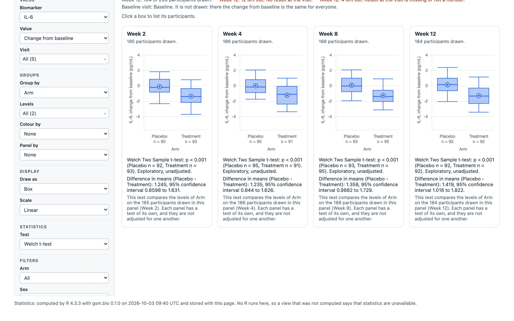
The group comparison widget, saved with htmlwidgets::saveWidget(selfcontained = TRUE) and opened from disk with the network off. The four tests are the browser demo’s numbers exactly. The line at the foot says which R computed them, and when.
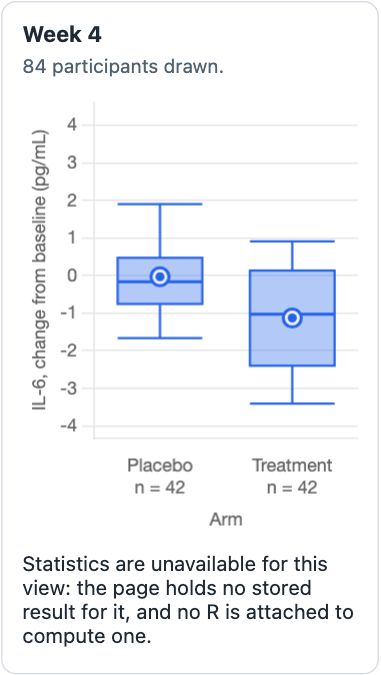
Set a filter the widget did not compute and the boxes redraw, but the line says statistics are unavailable. It never shows another view’s numbers.
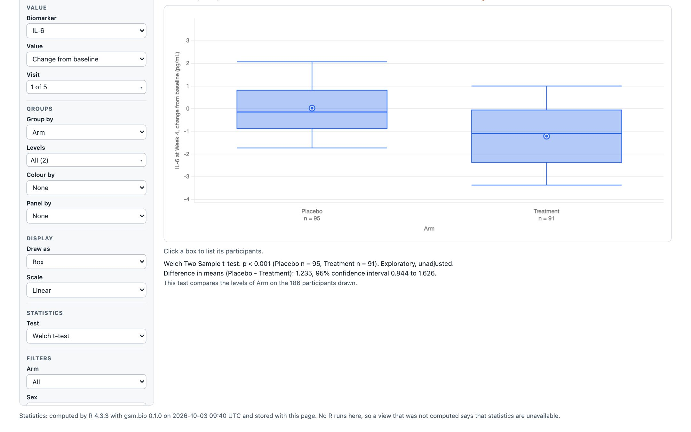
The biomarker screen widget, offline, after clicking IL-6: the chart a row opens is stored too, so the same 1.235 (0.844 to 1.626) appears with no R anywhere.
What you should see
Try it in R
gsm.bio referenceremotes::install_github("jwildfire/gsm.bio@v0.1.0"), or what is on dev with remotes::install_github("jwildfire/gsm.bio@dev").library(gsm.bio)
w <- Widget_BiomarkerScreen(
Synthetic_Results, Synthetic_Participants,
lSettings = list(visit = "Week 4", value_type = "change",
group_by = "ARM", baseline_visits = "Baseline")
)
htmlwidgets::saveWidget(w, "screen.html", selfcontained = TRUE)
Built on safety.viz’s kit
The charts look and behave like safety.viz’s because they are built from safety.viz’s own shared parts: the control sidebar, the filters, the record listing, the participant profile rail and its copy of Chart.js. safety.viz now hands these out as one export, its kit, instead of a second copy drifting in bio.viz. The kit, explained in one page.
bio.viz also lists its four charts in safety.viz’s chart-list format, published as portfolio.json, so safety.viz’s demo app can offer them in a Biomarkers tab on a study’s own files. safety.viz v1.9.0 does: its demo page shows the tab, with R started on request.
Analyze_Survival and a screen by hazard ratio exist in R only; the screen chart offers a difference or a correlation.